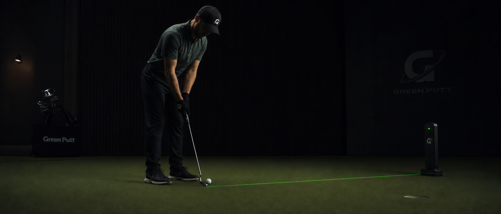
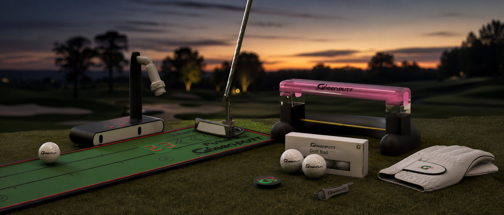
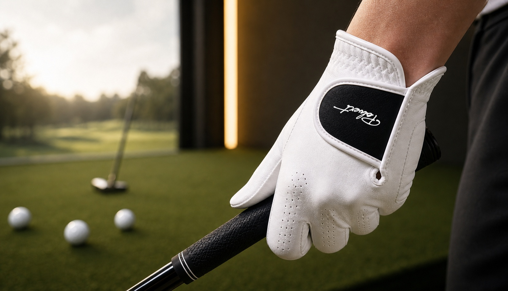

시선 고정
공을 굴린 뒤 어디까지 갔는지 보려고 고개를 들지 않습니다. 먼저 숫자가 뜰 포인트를 봅니다.

작동 원리
업로드된 시현 예상도의 핵심은 단순합니다. 퍼팅 후 공을 따라 고개를 돌리는 대신, 어드레스 근처의 포인트에 예상 거리 숫자가 표시됩니다. 사용자는 공을 쫓지 않고 그 숫자만 확인하며 헤드업 습관을 줄입니다.
거리감을 감으로만 남기지 않고 디지털 숫자로 보여주는 것이 GreenPutt의 제로 헤드업 경험입니다.
공을 굴린 뒤 어디까지 갔는지 보려고 고개를 들지 않습니다. 먼저 숫자가 뜰 포인트를 봅니다.
볼은 매트를 따라 굴러갑니다. GreenPutt는 이 움직임을 거리 피드백으로 바꾸는 장면을 만듭니다.
결과는 멀리 있는 홀이나 화면이 아니라, 사용자가 보고 있던 포인트 위의 숫자로 확인합니다.
고개를 돌려 공을 찾는 대신, 같은 자리에서 거리 숫자를 확인하는 습관을 반복합니다.
GreenPutt 라인업
제품을 나열하기보다, 퍼팅 한 번의 루틴 안에서 각 장비가 맡는 역할을 보여줍니다.

GreenPutt 아이덴티티
매트, 거리 피드백 장치, 퍼터, 장갑까지. GreenPutt는 장비를 나열하기보다 퍼팅이 좋아지는 한 번의 루틴을 설계합니다.

GreenPutt 스토어 픽
퍼팅 시스템이 완성되는 동안에도, 그립을 잡는 손의 감각은 오늘 바로 바꿀 수 있습니다. Polvert는 지금 구매 가능한 프리미엄 장갑 라인업으로 공식 스토어에서 이어집니다.
Polvert 상품 보기GreenPutt 공식 스토어